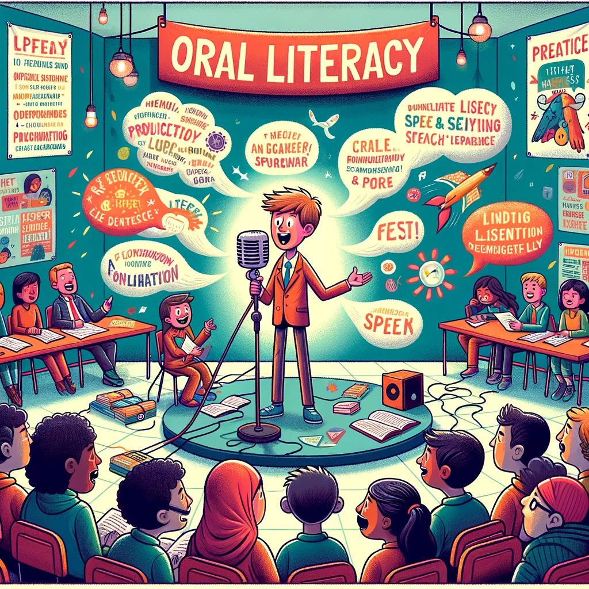

Unit 5 unfolds as a comprehensive exploration of oral literacy and its profound impact on effective reading and writing. In the first lesson, students delve into the symbiotic relationship between oral and written language. The focus expands to vocabulary development, emphasizing strategies to expand word knowledge, including deriving meaning from context, identifying prefixes and suffixes, and utilizing antonyms and synonyms to establish logical relationships between words. Practical exercises enrich their word library, and the lesson concludes with classwork and journal reflections, reinforcing the application of newfound skills.
The unit progresses to the second lesson, honing in on the critical aspect of diction in improving literacy skills. Students discern the nuances of formal, informal, and colloquial diction, gaining insight into when to employ each appropriately. The lesson delves into the significance of denotation versus connotation, providing a nuanced understanding of word choice. The exploration extends to a video discussion on political correctness, offering a real-world context for the impact of diction on communication.
The final lesson focuses on key elements in building oral fluency. Students identify stress in words and sentences, mastering techniques like emphasis through intonation patterns such as rising and falling intonation. Additional strategies, including chunking, enhance oral communication skills. Collectively, Unit 5 equips students with a multifaceted understanding of oral literacy, vocabulary enrichment, the impact of diction, and the nuances of oral fluency, contributing to their overall proficiency in language expression.